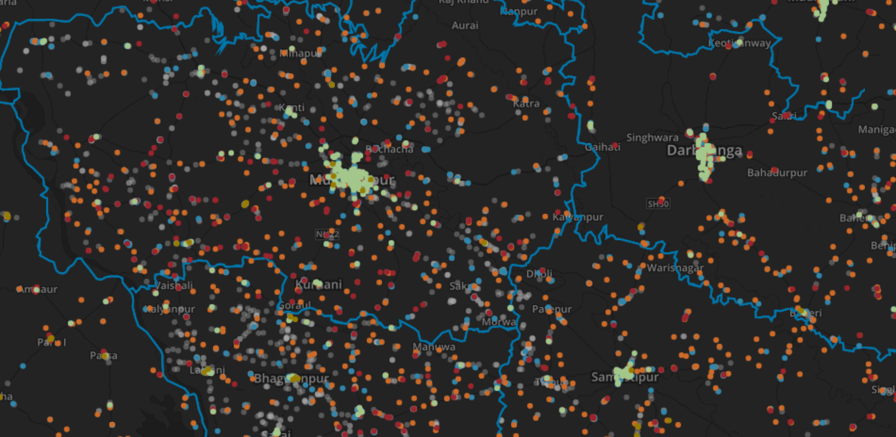
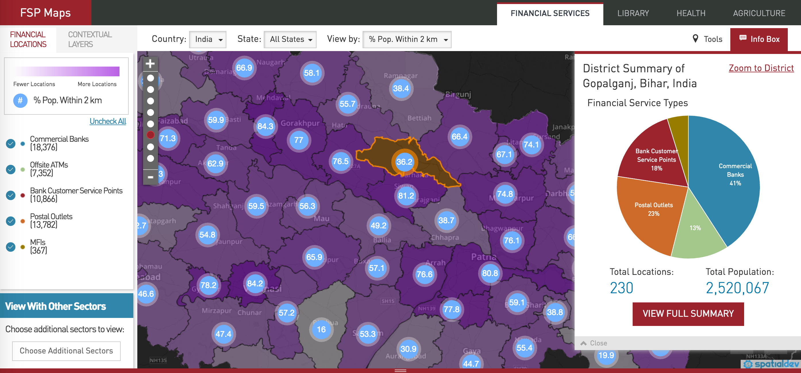
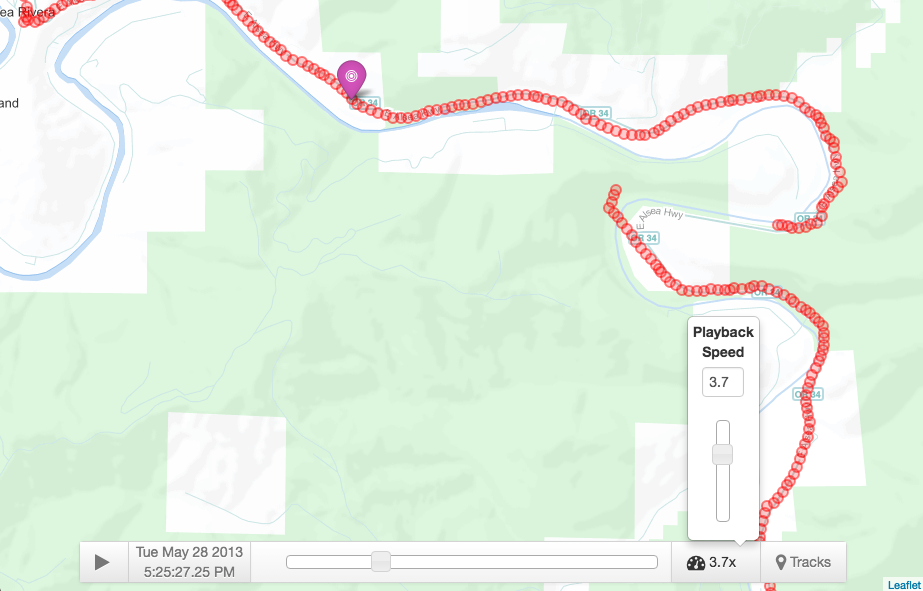

Leaflet.MapboxVectorTile
Star by Nicholas Hallahan and Ryan Whitley, 2014 - 2015
Leaflet.MapboxVectorTile is a Leaflet Plugin that renders Mapbox Vector Tiles on HTML5 Canvas. Inspired by several Mapbox presentations about vector tiles and the role they played (circa 2014) in the Mapnik rendering pipeline, we thought it would be fun to directly render vector tiles on a Leaflet map.
Today, there are several JavaScript libraries that provide sophisticated OpenGL interactive maps, but that was not the case in 2014. At the time, I was working for SpatialDev, and we often had clients ask us:
Can you make us a web map that shows 1,000,000+ points client-side on a map quickly?
This plugin was our solution.

The genious behind vector tiles is that they are a lossy representation of data. We take our source data, which may be many millions of points and highly complex lines and polygons, and we drive Mapnik to render vector tiles for a given area. A vector tile re-projects that data to the coordinate space of the tile itself, and if you have many points in a vector tile coordinate, Mapnik will in turn simplify many points to one. Mapnik applies simplification algorithms to the data when rendering a vector tile.
One project we applied our plugin to was a data visualization of financial services in India for the Bill and Melinda Gates Foundation.

These days you have other choices, such as Tangram and MapboxGL. However, Leaflet.MapboxVectorTile is simple, and sometimes simple is what you need. Your target browser may not render WebGL. Or, maybe, you are more intereted in rendering data-centric overlays, as opposed to sophisticated cartography. This plugin still has it's place in the vector tile ecosystem.
LeafletPlayback
Star by Nicholas Hallahan, 2013
LeafletPlayback provides the ability to replay GPS Tracks in the form of GeoJSON objects. Rather than simply animating a marker along a polyline, the speed of the animation is synchroized to a clock. The playback functionality is similar to a video player--you can start and stop playback, change the playback speed, load GPS tracks, as well as set the playback time with a slider or calendar/time-picker widget.
 View demo.
I began my work on LeafletPlayback in my web mapping class at Oregon State University. My final project involved animating GPS tracks that triggered geo-fences. This project took the form of a proof-of-concept web application. The actual GPS track animation component, however, was built into a Leaflet plugin -- a modular way for me to share my effort with the open source community.
Further documentation and examples are available on Github.